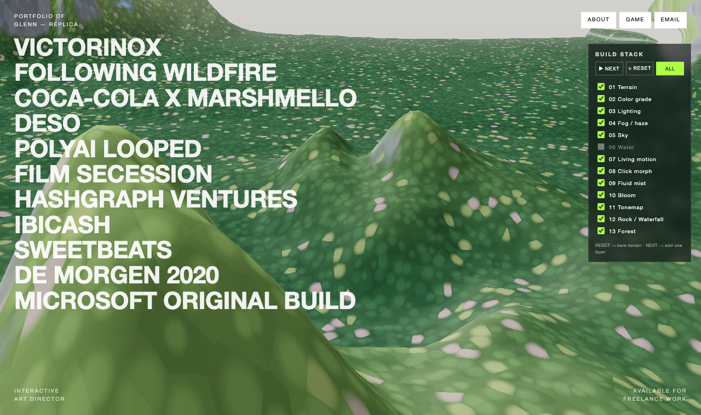
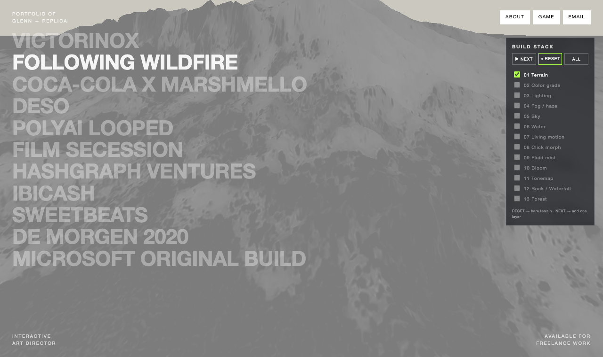
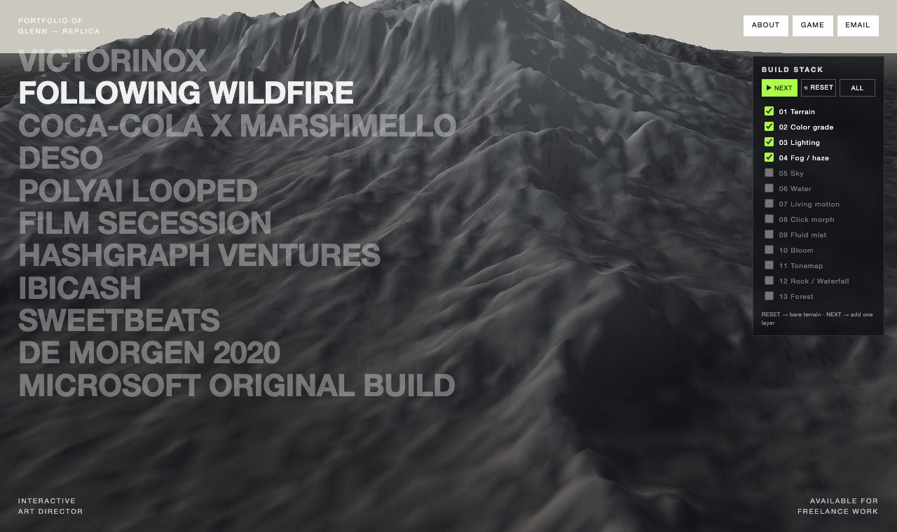

"Stylized Nature" 주제로, GPU가 매 프레임 산을 빚고 나무·암석·폭포·물을 셰이더로 그려내는 인터랙티브 풍경. 그 전체를 Problem → Improvement → Limitation 순으로 분해합니다.
Three.js Journey의 격월 챌린지. 이번 주제는 "Stylized Nature(양식화된 자연)", 마감 2026.07.01.
한국 채색화·민화풍 초록 산수에서 영감 → 3D 지형 위에 절차적 숲을 입힌 양식화된 자연.
한 레퍼런스 사이트(glenncatteeuw.com)의 안개 낀 3D 산 배경을 분석·복제하는 데서 시작해, 점점 한국 채색화(민화)풍 숲 풍경으로 발전시킨 작업입니다.

// 현재 결과 — 절차적 숲으로 덮인 3D 산화면은 픽셀 약 200만 개. 지형 메시는 정점(vertex) 약 14.8만 개. 이걸 초당 60번 다시 계산하는 건 CPU로는 불가능해요.
GPU(그래픽 칩)는 이 수백만 개를 동시에 병렬로 처리하도록 만들어진 하드웨어입니다. 각 점/픽셀마다 작은 프로그램(셰이더)이 한 번씩 돌아요.
그래서 이 발표의 거의 모든 마법은 셰이더(GLSL) 안에서 벌어집니다.
void main() { // 200만번 동시에 gl_FragColor = 색; // "나는 이 색" }
void main() { // 14.8만번 동시에 pos.z += 높이; // "나는 여기로" gl_Position = 투영(pos); }
실제 앱에는 우상단 패널이 있어, 이 13개 레이어를 한 겹씩 켜고 끄며 어떻게 쌓이는지 볼 수 있어요. 빈 지형에서 시작해 한 줄씩 더해집니다.
| 1 | Terrain 높이맵으로 산 (정점 변위) |
| 2 | Color grade 표면 기본색 |
| 3 | Lighting 빛/그림자 → 입체 |
| 4 | Fog 거리 안개 → 깊이 |
| 5–6 | Sky / Water 하늘 돔 · 반사 물 |
| 7–8 | Living motion / Click morph 미세움직임 · 메뉴전환 |
| 9 | Fluid mist 마우스 유체 안개 |
| 10–11 | Bloom / Tonemap 발광 · 색보정 |
| 12–13 | Rock·Waterfall / Forest 암석·폭포 · 숲 |

// RESET → "01 Terrain"만: 회색 무지 지형 (맨 바닥)main.js의 frame() 루프가 매 프레임 반복:
function frame(time) { requestAnimationFrame(frame); fluid.update(dt); // 1. 유체 물리 1스텝 terrain.update(t); // 2. uTime 갱신(움직임용) water.update(t, cam); // 3. 물 시간/카메라 controls.update(); // 4. 카메라 post.render(); // 5. 씬→합성→블룸→화면 }

// 지형 + 색 + 조명 + 안개까지 켠 상태 (NEXT ×3)GPU에게 텍스처는 픽셀마다 숫자 4개(RGBA)가 든 2D 표일 뿐. 색으로 안 읽고 다른 의미로 써도 됩니다.
float h = texture2D(높이맵, uv).r; // 밝기 0~1 pos.z += h * 산높이; // 그만큼 위로
세분화된 평면(800×1200, 정점 14.8만)의 각 정점을 높이맵 밝기만큼 밀어올립니다. 그리고 산을 모프하려고 항상 두 지형(A·B)을 섞어 둡니다.
// 두 개의 완성된 지형을 uMorph로 섞음 float worldH(uv) { return mix( bh(uv, alphaA, offA) * 높이A, // 출발 산 bh(uv, alphaB, offB) * 높이B, // 도착 산 uMorph); // 0→1 } pos.z += worldH(uv);
높이만으론 납작해요. 각 점이 어느 방향을 향하는지(법선)를 이웃 높이차로 구하고, 햇빛 방향과 비교해 밝기를 정합니다.
float diff = dot(법선, 햇빛방향); // 정면=1(밝음), 직각=0(그림자) col = albedo * (0.25 + 0.8*diff);
법선은 버텍스에서 높이 기울기로 계산:
hX = worldH(uv + 오른쪽);
hY = worldH(uv + 위쪽);
vNormal = normalize(vec3(
-(hX-h)/dx, 1.0, -(hY-h)/dy));나무를 물체로 심지 않고(InstancedMesh ✕), 표면 프래그먼트에서 절차적으로 그립니다. UV를 격자로 나눠 각 칸에 점을 찍는 Voronoi로 둥근 나무 도장을 만들어요.
vec2 fuv = vUv * 240.0; // 칸 밀도 // 가장 가까운 셀까지 거리 md for (y=-1..1) for (x=-1..1) { 점 = hash(셀+이웃); md = min(md, 거리²); } float dab = smoothstep(sz,*, sqrt(md)); // 둥근 나무
나무 도장이 제각각 고대비면, 그 노이즈가 산의 큰 명암(3D 형태)을 덮어 평평하게 보여요. 그래서:
// 형태가 주도하는 초록 베이스 baseGreen = mix(진초록, 연두, 높이); forest = baseGreen * (0.74+dab*..) * 랜덤밝기; // 그 위에 강한 빛/그림자 lit = forest * (0.25 + 0.8*diff);
float slope = 1.0 - n.y; // 0평지 1수직 float steep = smoothstep(.4,.54,slope); 색 = mix(숲, 바위색, steep); // 절벽엔 바위 나무 *= 1.0 - steep; // 나무는 피해서
// 이웃합-4*중심 >0 = 오목(골) vConcavity = hX+hXn+hY+hYn - 4.0*h; float valley = smoothstep(.15,1., vConcavity); 폭포 = valley * steep * 세로줄기 * 흐름;
카메라에서 멀어질수록 그 픽셀을 안개색 쪽으로 섞습니다. 겹친 산이 뒤로 갈수록 흐려져 깊이가 생겨요.
float d = 카메라거리(vViewZ); float fog = smoothstep(560, 1450, d); col = mix(col, 안개색, fog);
안개색은 메뉴마다 그 프로젝트 색으로 부드럽게 트윈 (하늘·물·배경과 함께).
장면을 감싼 큰 구 안쪽에 그라데이션 — 천정→지평선 색을 바라보는 높이로 섞음. 메뉴 따라 색 변함.
float 수심 = 물높이 - 지형높이; if (수심 < 0.) discard; // 산이 높음→물X(땅) 거품 = (얕을수록); // 해안선 프레넬 = pow(1-dot(법선,시선),3); // 비스듬→하늘반사
메뉴를 클릭하면 그 프로젝트 산으로 전환, 다음 클릭 전까지 유지. 핵심은 "두 상태 cross-fade"로 미끄러짐을 없앤 것.
// 현재 B를 A로 스냅샷, 새 프리셋을 B로 A = B; B = 새프리셋; uMorph = 0; gsap.to(uMorph, {value:1, duration:1.6});
두 개의 완성된 지형을 높이만 보간 → 봉우리가 제자리에서 솟고 꺼짐 (UV를 밀면 텍스처가 옆으로 흐르는 "슬라이딩"이 안 생김).
원본 사이트의 minified bundle.js는 의외로 씬 설정이 예쁘게 박혀 있었어요. Python으로 11개 프로젝트의 실제 값을 파싱:
{ name:'Victorinox', disp:0, dispScale:77.2,
dispOff:[.283,.543], fog:'#E8664B',
texScale:1.0, contrast:2.29 }
{ name:'Hashgraph', ..., fog:'#ff0891' } // 핑크
{ name:'Sweetbeats', ..., fog:'#A04CE8' } // 보라원본 산 표면은 알록달록 텍스처가 아니라 흑백 마블 + fog색이었어요. 컬러 텍스처를 채도 0으로 깔고, 색은 fog에서. (그래서 안 알록달록)
PerspectiveCamera(30, ...); // fov 30 camera.position.set(0,65,200); camera.lookAt(0,0,0);
water.y=42.307, mountainHeight=54.35)의 비율로 환산해 적용.가장 정교한 부분. 진짜 물·연기의 Navier-Stokes 방정식을 GPU로 매 프레임 풉니다 (원본 기법 이식).
// "이 잉크는 방금 어디서 왔나" 역추적
coord = vUv - dt * 속도 * texelSize;
새잉크 = texture2D(염료장, coord);3D 씬을 화면에 곧장 안 그리고, 텍스처에 먼저 렌더한 뒤 여러 패스를 거칩니다 (EffectComposer).
시간에 따라 흐르는 노이즈를 높이에 아주 살짝 더해 "살아있는" 느낌. (강하면 물 경계가 깜빡여서 미세하게.)
anim = texture2D(높이맵, uv*1.7 + uTime*.01).r; h += (anim-.5) * 0.8 * uAnimOn;
토글들(uForestOn·uRockOn·uGradeOn·uLightOn·uFogOn)은 전부 0/1 uniform으로 mix를 켜고 끕니다 → 패널의 13겹이 이 한 셰이더 안에서 합쳐짐.
숲의 초록도, 미스티 산의 색도 전부 높이(vHeight)로 두 색을 섞어 만듭니다. 계곡은 진하게, 능선은 밝게.
float t = smoothstep(0., .55, vHeight); vec3 green = mix(진초록, 연두, t);
여기에 거리 안개까지 더하면, 가까운 골은 진한 초록 / 먼 능선은 옅은 안개초록 = 레퍼런스 채색화의 겹친 산 느낌.
마법은 없었습니다. 전부 "숫자를 매 프레임 GPU가 계산"한 결과예요.
cd replica
npm install
npm run dev # localhost:5173RESET → NEXT를 누르며 "이 겹은 무엇을 더하는가"를 실시간으로 보여주는 게 가장 강력한 데모입니다. (지형 → 조명 → 숲 → 암석·폭포 → 안개 → 하늘 → 물 → …)